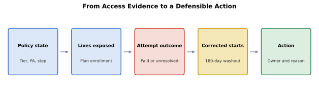
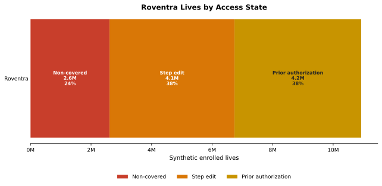
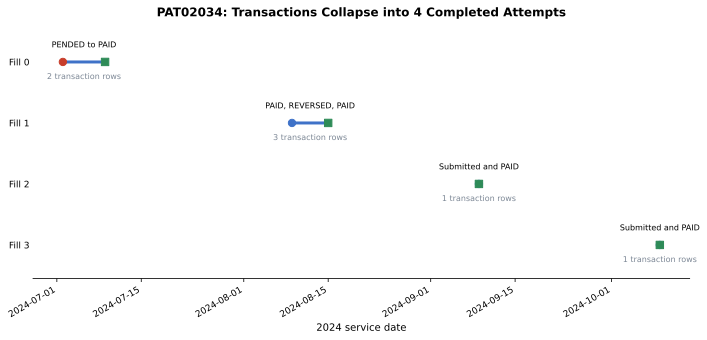
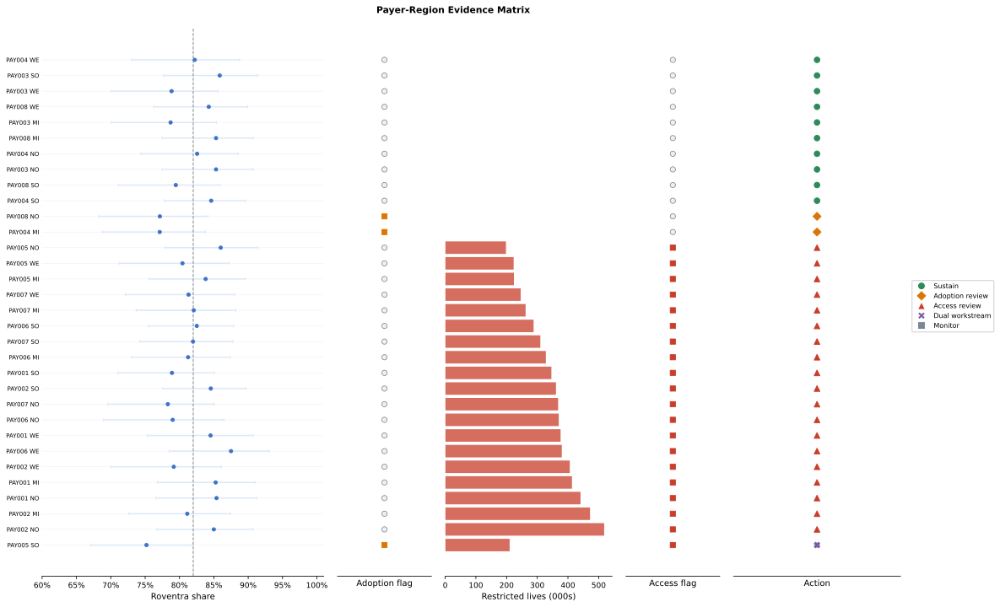
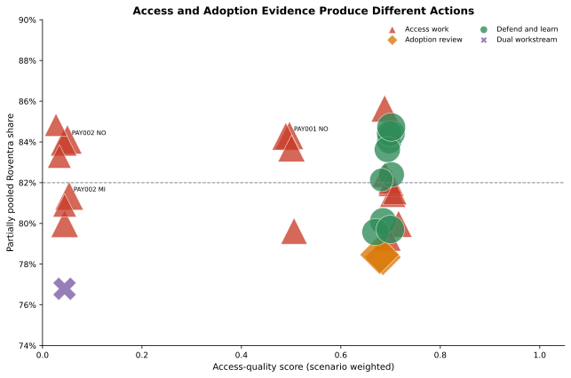
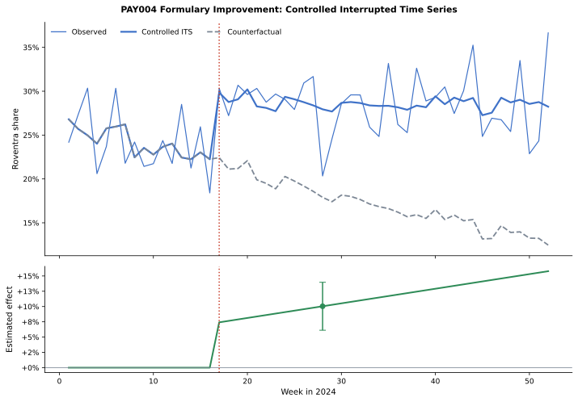
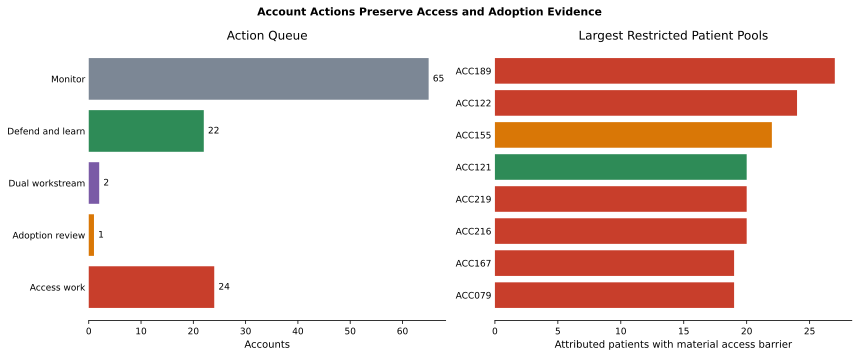
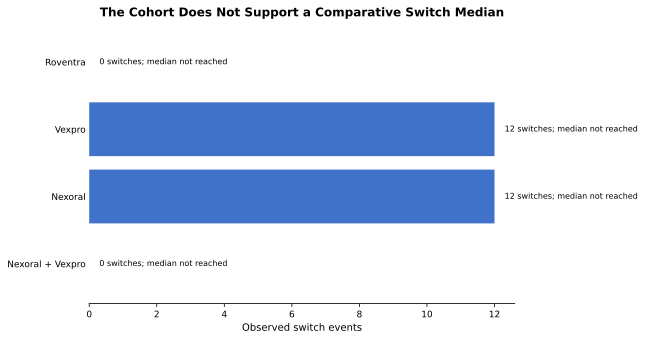

Chapter 7: Competitive Intelligence and Market Access
Chapter 6 turned patient evidence into an HCP and account plan. The next review asks whether uneven Roventra uptake comes from payer access or product adoption. Those findings have different owners. Market access works on coverage and utilization-management barriers. Field analytics investigates adoption when access is workable.
Chapter 5 identified 3,415 new-to-therapy patients after a 180-day treatment washout. Roventra accounted for 2,798 starts. Chapter 7 adds the benefit evidence around those starts. Across 10,926,000 synthetic enrolled lives, 6,740,000 face a material barrier through non-coverage or step therapy. Three of 32 payer-region cells also show enough evidence of an adoption gap.
By the end of the chapter, you will build an effective-dated access landscape, calculate plan coverage and covered lives with explicit denominators, reconstruct prescription attempts, measure corrected first-treatment share with uncertainty, and route payer-region and account evidence to the correct owner. The reusable artifact is a decision table with the evidence, denominator, owner, reason code, rule version, and refresh date on every row.
All products, patients, payers, accounts, and events in the running case are fictional and synthetic. The PAY004 event contains a planted effect so the measurement code can be tested.
Run the blocks in order from the repository root. Generate the supplemental data first:
uv run python ch07_competitive/generation_modules/generate_ch07_data.py
Chapter 7 supplemental data
plan_region_enrollment: 32 rows
formulary_event_panel: 208 rows
Wrote Chapter 7-only data to ch07_competitive/data/generated
Then open chapter7_walkthrough.ipynb, or run the chapter through the shared analysis entry point.
7.1 Load the Evidence Package
Figure 7.1 shows the chapter's analytical chain. Policy records define the benefit state. Enrollment supplies the lives denominator. Pharmacy transactions become prescription attempts. Chapter 5 supplies washout-corrected starts. The final rule combines those results into an action.

Figure 7.1. Each action is traceable to an effective-dated policy, an exposed population, a transaction outcome, and a corrected start count. Synthetic data.
Listing 7.1: Load the shared Chapter 7 results
from pathlib import Path
import sys
ROOT = Path.cwd().resolve()
sys.path.insert(0, str(ROOT))
from ch07_competitive.scripts.run_analysis import run_analysis
results = run_analysis(ROOT)
headline = results["headline"].iloc[0]
print(f"New-to-therapy patients: {int(headline.new_to_therapy_patients):,}")
print(f"Roventra new starts: {int(headline.roventra_new_starts):,}")
print(
f"Materially restricted lives: {int(headline.restricted_lives):,} "
f"of {int(headline.total_lives):,} "
f"({headline.restricted_lives / headline.total_lives:.1%})"
)
print(f"Payer-region access flags: {int(headline.payer_region_access_flags)} of 32")
print(f"Payer-region adoption flags: {int(headline.payer_region_adoption_flags)} of 32")
New-to-therapy patients: 3,415
Roventra new starts: 2,798
Materially restricted lives: 6,740,000 of 10,926,000 (61.7%)
Payer-region access flags: 20 of 32
Payer-region adoption flags: 3 of 32
The 3,415-patient cohort and 2,798 Roventra starts match Chapter 5. The access and adoption flags come later in the chain. They appear here so the opening numbers return when the decision table is complete.
7.2 Build the Effective-Dated Access Landscape
Plan coverage and covered lives answer different questions. Plan coverage gives every payer-region record equal weight. Covered lives weight each record by enrollment. Access quality applies a declared severity weight to each policy state. The 3 measures stay separate.
The Chapter 7 generator creates a synthetic enrollment denominator for every payer-region cell. The policy module filters access and formulary records to December 31, 2024, reconciles duplicate restriction fields, and joins enrollment at the same grain.
Listing 7.2: Calculate plan coverage and covered lives
summary = results["covered_lives_summary"].query("payer_type == 'All'").copy()
summary["plan_coverage_rate"] = summary.plan_coverage_rate.map(lambda v: f"{v:.1%}")
summary["covered_lives_rate"] = summary.covered_lives_rate.map(lambda v: f"{v:.1%}")
summary["unrestricted_lives_rate"] = (
summary.unrestricted_lives_rate.map(lambda v: f"{v:.1%}")
)
summary["access_quality_score"] = (
summary.access_quality_score.map(lambda v: f"{v:.3f}")
)
columns = [
"plans", "covered_plans", "plan_coverage_rate",
"total_lives", "covered_lives", "covered_lives_rate",
"unrestricted_lives", "unrestricted_lives_rate",
"access_quality_score",
]
print(summary[columns].to_string(index=False))
plans covered_plans plan_coverage_rate total_lives covered_lives covered_lives_rate unrestricted_lives unrestricted_lives_rate access_quality_score
32 24 75.0% 10926000 8314000 76.1% 0 0.0% 0.516
Twenty-four of 32 plan-region records cover Roventra, producing a 75.0% plan coverage rate. Those records contain 8,314,000 of 10,926,000 lives, or 76.1%. Every covered cell still carries prior authorization, step therapy, specialty-pharmacy routing, or another restriction, so unrestricted lives equal 0 in this synthetic case.
The access-quality score is a scenario-weighted measure. It assigns 1.00 to covered, 0.70 to covered with prior authorization, 0.50 to covered with step therapy, and 0.05 to non-covered. Its denominator is enrolled lives. It supports sensitivity analysis and should retain its weight version in production.
Listing 7.3: Show where the lives sit
restriction_lives = results["restriction_lives"].copy()
restriction_lives["lives_share"] = (
restriction_lives.lives_share.map(lambda v: f"{v:.1%}")
)
print(restriction_lives.to_string(index=False))
access_state payer_region_cells enrolled_lives lives_share
Prior authorization 12 4186000 38.3%
Step edit 12 4128000 37.8%
Non-covered 8 2612000 23.9%

Figure 7.2. Non-coverage and step therapy affect 6.7 million lives. Prior authorization affects another 4.2 million. Synthetic data.
The main routing rule treats non-coverage and step therapy as material access barriers. Prior authorization remains workable access unless transaction outcomes show unresolved friction. A production rule should reflect the product, benefit, and contracting strategy.
7.3 Measure Corrected Competitive Starts
Chapter 5 demonstrated why first observed treatment can overstate new starts. A 180-day washout removed 395 apparent Roventra starts and other continuing users. Chapter 7 reads the corrected line table instead of rebuilding treatment entry from the uncorrected journey table.
Listing 7.4: Reconcile source of business
print(results["source_of_business"].to_string(index=False))
source_of_business patients brand_new_starts
New to therapy 3415 2798
Continuing after washout check 513 0
Switch 24 0
Add on 4 0
Restart 0 0
The corrected cohort contains 3,415 new-to-therapy patients. A separate 513 patients had prior treatment within the washout and remain continuing users. The transition logic records 24 switches and 4 additions. Additions stay out of the switch count.
The corrected first-regimen mix is:
line1 = results["corrected_line1"]
mix = (
line1.groupby("first_regimen").patient_id.nunique()
.sort_values(ascending=False)
.rename("patients")
.reset_index()
)
mix["share"] = (mix.patients / len(line1)).map(lambda v: f"{v:.1%}")
print(mix.to_string(index=False))
first_regimen patients share
Roventra 2798 81.9%
Vexpro 309 9.0%
Nexoral 303 8.9%
Nexoral + Vexpro 5 0.1%
Roventra accounts for 81.9% of new-to-therapy first regimens. The denominator is the 3,415 washout-qualified patients. The 5 starting combinations remain a separate regimen because allocating them to one product would change the definition.
7.4 Follow Prescription Attempts to Final Outcomes
Pharmacy rows describe operational transactions. The access metric needs prescription attempts. Chapter 7 groups by patient, payer, prescriber, prescribed NDC, and fill number, then orders transactions by service date.
PAT02034 provides the record trace. Her first fill has a PENDED transaction followed by PAID 7 days later. Her second fill has PAID, REVERSED, and PAID rows. Both sequences become 1 completed attempt.
Listing 7.5: Inspect PAT02034's 4 attempts
trace = results["pat02034_attempt_trace"].copy()
columns = [
"fill_number", "first_submission_date", "last_transaction_date",
"transaction_rows", "had_pend", "had_reversal",
"final_outcome", "days_to_paid",
]
print(trace[columns].to_string(index=False))
fill_number first_submission_date last_transaction_date transaction_rows had_pend had_reversal final_outcome days_to_paid
0 2024-07-02 2024-07-09 2 True False Completed 7.0
1 2024-08-09 2024-08-15 3 False True Completed 0.0
2 2024-09-09 2024-09-09 1 False False Completed 0.0
3 2024-10-09 2024-10-09 1 False False Completed 0.0

Figure 7.4. Fill 0 contains a 7-day access delay. Fill 1 contains a reversal correction. Each chain contributes once to the attempt denominator. Synthetic data.
The current synthetic file has 0 final unresolved Roventra attempts. PENDED exposure still varies by payer-region, ranging from about 8% to 26% of attempts. That result describes administrative contact with the benefit. It does not establish failed access because every PENDED chain eventually resolves to PAID in this file.
7.5 Separate Access from Adoption
The decision table joins 4 evidence layers:
- effective-dated access state and enrolled lives
- washout-corrected starts
- final prescription-attempt outcomes
- uncertainty around the observed brand share
The main adoption rule uses a hierarchical beta-binomial estimate. Each payer-region starts with a weak prior centered on the national corrected share, then updates with the cell's starts. The output reports the posterior mean and the probability that the true share is below the 82% benchmark. An adoption flag requires at least 30 treated patients and an 80% probability of falling below the benchmark.
The action policy uses 2 separate flags:
| Access flag | Adoption flag | Action |
|---|---|---|
| No | No | Defend and learn |
| No | Yes | Adoption review |
| Yes | No | Access work |
| Yes | Yes | Dual workstream |
| Sparse evidence | Any | Monitor |
Three cells show why observed share alone is insufficient.
Listing 7.6: Compare 3 payer-region decisions
decisions = results["payer_region_decisions"]
selected = (
decisions.set_index(["payer_id", "region"])
.loc[
[
("PAY002", "Northeast"),
("PAY004", "Midwest"),
("PAY005", "South"),
]
]
.reset_index()
)
selected["brand_share"] = selected.brand_share.map(lambda v: f"{v:.1%}")
selected["share_interval"] = selected.apply(
lambda row: f"{row.share_lower_95:.1%} to {row.share_upper_95:.1%}",
axis=1,
)
selected["pend_exposure_rate"] = (
selected.pend_exposure_rate.map(lambda v: f"{v:.1%}")
)
selected["probability_below_benchmark"] = (
selected.probability_below_benchmark.map(lambda v: f"{v:.1%}")
)
columns = [
"payer_id", "region", "access_state", "enrolled_lives",
"treated_patients", "brand_starts", "brand_share",
"share_interval", "pend_exposure_rate",
"probability_below_benchmark", "action",
]
print(selected[columns].to_string(index=False))
payer_id region access_state enrolled_lives treated_patients brand_starts brand_share share_interval pend_exposure_rate probability_below_benchmark action
PAY002 Northeast Non-covered 518000 100 85 85.0% 76.7% to 90.7% 17.1% 23.7% Access work
PAY004 Midwest Prior authorization 317000 118 91 77.1% 68.8% to 83.8% 15.0% 87.1% Adoption review
PAY005 South Non-covered 210000 129 97 75.2% 67.1% to 81.8% 11.6% 95.2% Dual workstream
PAY002 Northeast has 85.0% observed share and 518,000 non-covered lives. Its strong observed adoption does not remove the policy barrier, so the cell routes to access work. PAY004 Midwest has workable prior-authorization access and an 87.1% posterior probability of falling below the benchmark, so it routes to adoption review. PAY005 South has both non-coverage and a supported adoption gap, so it receives a dual workstream.

Figure 7.3. Similar Roventra shares can sit beside different access states. The action column preserves those differences. Synthetic data.

Figure 7.5. Access quality and adoption evidence form separate dimensions. Point area reflects enrolled lives, while color and shape show the action. Synthetic data.
The complete payer-region queue is:
print(decisions.action.value_counts().to_string())
action
Access work 19
Defend and learn 10
Adoption review 2
Dual workstream 1
Every output row also carries the analysis date, owner, reason code, decision-rule version, and refresh date. That metadata turns a classification into a reviewable operating artifact.
7.6 Measure a Formulary Change
PAY004 Northeast receives a planted formulary improvement at week 17. The supplemental panel contains weekly Roventra starts and class starts for PAY004 and 3 donor payers. Donors share the market trend and seasonal pattern without receiving the event.
The controlled interrupted time series centers time at week 17:
\(\beta_2\) is the immediate level effect at the event. \(\beta_3\) is the weekly slope change after the event. The model uses Newey-West standard errors with a 4-week lag.
Listing 7.7: Report the controlled event effect
event = results["formulary_event_effect"].iloc[0]
print(f"Immediate level effect: {event.immediate_effect:+.1%}")
print(f"Slope change per week: {event.slope_change_per_week:+.2%}")
print(
f"Week {int(event.effect_week)} effect: {event.effect_at_week:+.1%} "
f"(95% CI {event.effect_at_week_lower_95:+.1%} "
f"to {event.effect_at_week_upper_95:+.1%})"
)
Immediate level effect: +7.4%
Slope change per week: +0.24%
Week 28 effect: +10.0% (95% CI +6.1% to +14.0%)

Figure 7.6. The controlled model estimates a 7.4-point immediate increase and a 10.0-point effect by week 28. The generator planted a 6-point level effect plus post-event growth. Synthetic data.
A convex synthetic control provides a robustness check. The pre-period fit and donor weights remain visible:
diagnostic = results["synthetic_control_diagnostics"].iloc[0]
print(f"Pre-period RMSPE: {diagnostic.pre_rmspe:.3f}")
print(f"Post-period mean gap: {diagnostic.post_mean_gap:+.1%}")
print(
"Donor weights: "
f"PAY003={diagnostic.weight_PAY003:.3f}, "
f"PAY006={diagnostic.weight_PAY006:.3f}, "
f"PAY008={diagnostic.weight_PAY008:.3f}"
)
Pre-period RMSPE: 0.038
Post-period mean gap: +7.5%
Donor weights: PAY003=0.547, PAY006=0.000, PAY008=0.453
The synthetic control uses independent donor series and reports the treated-minus-control gap. A production analysis should also review concurrent events, donor eligibility, placebo dates, seasonality, and the expected delay between a policy update and prescribing response.
7.7 Translate the Decision to Accounts
Chapter 6 already assigned patients to HCPs and active account affiliations. Chapter 7 reuses that mapping. Each account retains its payer-specific queue, so one covered payer cannot make every patient in the account look accessible.
Account actions use attributed-patient share as the access denominator. A material barrier flag requires at least 60% of attributed patients in non-covered or step-edit cells. Adoption uses the same partial-pooling logic as the payer-region table. Accounts also need at least 10 attributed patients and 8 treated patients.
Listing 7.8: Build the account action queue
accounts = results["account_access_adoption_actions"]
print(accounts.action.value_counts().to_string())
print()
selected_accounts = (
accounts.set_index("account_id")
.loc[["ACC155", "ACC005", "ACC121"]]
.reset_index()
)
selected_accounts["brand_share"] = (
selected_accounts.brand_share.map(lambda v: f"{v:.1%}")
)
selected_accounts["restricted_patient_rate"] = (
selected_accounts.restricted_patient_rate.map(lambda v: f"{v:.1%}")
)
selected_accounts["probability_below_benchmark"] = (
selected_accounts.probability_below_benchmark.map(lambda v: f"{v:.1%}")
)
columns = [
"account_id", "attributed_patients", "treated_patients",
"brand_starts", "brand_share", "restricted_patients",
"restricted_patient_rate", "probability_below_benchmark",
"action", "reason_code",
]
print(selected_accounts[columns].to_string(index=False))
action
Monitor 65
Access work 24
Defend and learn 22
Dual workstream 2
Adoption review 1
account_id attributed_patients treated_patients brand_starts brand_share restricted_patients restricted_patient_rate probability_below_benchmark action reason_code
ACC155 38.0 24.0 16.0 66.7% 22.0 57.9% 88.3% Adoption review ACCOUNT_ADOPTION_GAP
ACC005 24.0 11.0 6.0 54.5% 18.0 75.0% 86.6% Dual workstream DUAL_ACCOUNT_ACCESS_AND_ADOPTION
ACC121 34.0 15.0 12.0 80.0% 20.0 58.8% 51.4% Defend and learn ACCOUNT_DEFEND_SUPPORTED_ADOPTION
ACC155 has an adoption gap and falls below the account access threshold. ACC005 clears both flags, producing a dual workstream. ACC121 has 58.8% of attributed patients in materially restricted cells, just below the 60% threshold, and its adoption evidence remains inconclusive. Its action is Defend and learn.

Figure 7.7. Sparse account evidence produces 65 monitoring actions. The second panel shows where the largest attributed restricted populations sit. Synthetic data.
Local teams can override an action through the Chapter 6 override process. The original evidence, policy result, approver, and expiration date should remain in the audit record.
7.8 Monitor Evidence Sufficiency and Change
Weekly monitoring can flag a sustained shift before the next quarterly model run. The CUSUM monitor standardizes weekly share against the first 12 weeks, applies a 0.5-standard-deviation slack, and triggers at a cumulative value of 4. It resets after each alarm.
alerts = results["changepoint_alerts"].head(3).copy()
alerts["standardized_cusum"] = alerts.standardized_cusum.round(3)
print(alerts.to_string(index=False))
week direction standardized_cusum
20 Increase 4.136
24 Increase 4.127
32 Increase 4.538
The first alert appears in week 20, 3 weeks after the planted policy event. The alert supplies a review date. The controlled event model supplies the effect estimate.
The switch evidence also needs an evidence gate. The synthetic cohort contains 0 Roventra switches and 12 observed switches for each single-product competitor. Every survival curve stays above 50%, so a median time to switch is not reached.
columns = [
"first_regimen", "patients", "switch_events",
"addition_events", "median_time_to_switch", "comparison_status",
]
print(results["switch_evidence"][columns].to_string(index=False))
first_regimen patients switch_events addition_events median_time_to_switch comparison_status
Roventra 2798 0 0 Not reached Insufficient switch events
Vexpro 309 12 1 Not reached Insufficient switch events
Nexoral 303 12 3 Not reached Insufficient switch events
Nexoral + Vexpro 5 0 0 Not reached Insufficient switch events

Figure 7.8. The available events support algorithm checks and record review. They do not support a comparative switch-median claim. Synthetic data.
The final monitoring package should track:
- formulary effective dates and enrollment refreshes
- claim maturity and transaction capture
- action counts and threshold sensitivity
- posterior adoption probabilities
- policy and account overrides
- weekly changepoint alerts
- event counts before any survival comparison
7.9 Summary
The chapter opened with 2,798 corrected Roventra starts and 6.7 million materially restricted lives. The final decision table explains how those numbers translate into work.
- Effective-dated policy records define the access state on the analysis date.
- Plan coverage, covered lives, unrestricted lives, and access quality use separate denominators and meanings.
- The 180-day washout preserves the Chapter 5 new-to-therapy definition.
- Additions remain separate from switches.
- Prescription transactions collapse into attempts before friction rates are calculated.
- Wilson intervals and partial pooling keep small-cell noise visible.
- Access and adoption remain separate flags, allowing a dual workstream.
- Controlled interrupted time series measures a formulary event against contemporaneous donor trends.
- Account actions reuse the Chapter 6 patient-HCP-account mapping.
- Switch medians remain
Not reachedwhen the curves do not cross 50%.
The reusable rule is:
Chapter 7 action rule: Assign effective-dated policy and exposed lives first. Reconstruct prescription attempts and corrected starts next. Release an access, adoption, dual, defend, or monitor action only when the denominator, uncertainty, owner, reason code, rule version, and refresh date appear on the same row.
7.10 Exercises
- Rebuild covered lives. Use Section 7.2. Select 4 payer-region rows from
policy_landscape, calculate plan coverage, covered lives, unrestricted lives, and access quality by hand, then reproduce the values in fewer than 20 lines of pandas. Which measure belongs in a payer contracting review? - Trace an attempt. Use Section 7.4. Select 1 patient with a PENDED transaction, print the full transaction chain, and classify the final attempt outcome. State which row count would overstate access friction.
- Change the decision rule. Use Section 7.5. Move the adoption benchmark from 82% to 80%, rerun the payer-region decisions, and compare actions. State whether the underlying evidence changed or only the operating policy changed.
Worked solutions are in exercise_solutions.ipynb. Each solution ends with the judgment an analyst should document for real data.
Chapter 8 adds contact sequence and channel response to these account actions. The access and adoption owners remain visible when the engagement plan is built.